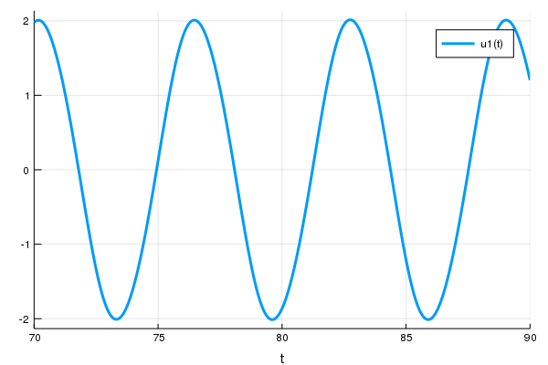
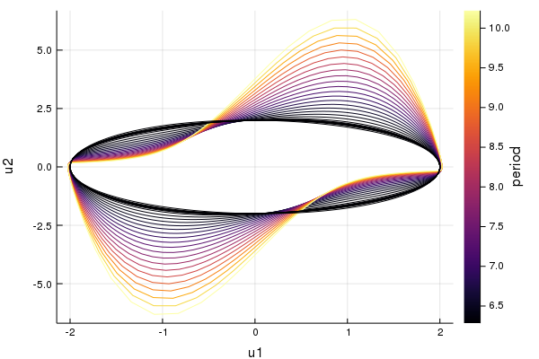

Continuation of limit cycles of the van der Pol oscillator
using Bifurcations
using Bifurcations: LimitCycleProblem
using Bifurcations.Examples.DuffingVanDerPol
using Plots
using OrdinaryDiffEq: Tsit5, remakeCreate an ODEProblem and solve it:
ode = remake(
DuffingVanDerPol.ode,
p = DuffingVanDerPol.DuffingVanDerPolParam(
d = 0.1,
),
u0 = [1.0, 1.8],
tspan = (0.0, 90),
)
sol = solve(ode, Tsit5())
plt_ode = plot(sol, vars=1, tspan=(70, 90))
Let's find a point (approximately) on the limit cycle and its period:
using Roots: find_zero
t0 = find_zero((t) -> sol(t)[1] - 1, (80, 83))
t1 = find_zero((t) -> sol(t)[1] - 1, (t0 + 3, t0 + 7))
x0 = sol(t0)
@assert all(isapprox.(x0, sol(t1); rtol=1e-2))
x02-element Array{Float64,1}:
1.0000000000000049
1.822900672704133Then a LimitCycleProblem can be constructed from the ode.
num_mesh = 50
degree = 5
t_domain = (0.01, 4.0) # so that it works with this `num_mesh` / `degree`
prob = LimitCycleProblem(
ode, DuffingVanDerPol.param_axis, t_domain,
num_mesh, degree;
x0 = x0,
l0 = t1 - t0,
de_args = [Tsit5()],
)As the limit cycle is only approximately specified, solver option start_from_nearest_root = true must be passed to start continuation:
solver = init(
prob;
start_from_nearest_root = true,
max_branches = 0,
)
@time solve!(solver) 14.314537 seconds (10.22 M allocations: 1.320 GiB, 9.49% gc time)
BifurcationSolver <Continuous>
# sweeps : 2
# points : 35
# branches : 1
# saddle_node : 1By default, plot_state_space plots limit cycles colored by its period:
plt_lc = plot_state_space(solver)